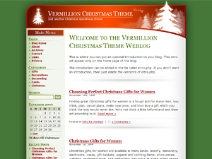

 Thanks for downloading the
Vermilion Christmas theme for WordPress!
This theme was designed for WordPress 2.0, uses valid XHTML and has been tested in Firefox, IE 6, IE 7 and Opera.
Be sure to check the Vermilion Christmas blog occasionally for any updates.
I hope you enjoy this theme and I hope it serves you well!
--
Keith Hardaway
Amazing Christmas Ideas
http://www.amazing-christmas-ideas.com
Christmas WordPress Themes
http://wpthemes.amazing-christmas-ideas.com
The Vermilion Christmas 1.0 theme for WordPress.com is licensed under a GPL license.
Just upload the folder named VermilionChristmas to your WordPress themes folder. (wp-content/themes/) Then login to WordPress, click on Presentation then click on the Vermilion Christmas theme to activate it.
This theme contains a file called intro.php. It allows you to add a unique, static introduction to your blog that appears only on the homepage. You will probably want to edit it either before or immediately after installing the theme.
Editing intro.php is easy.
Here's how it works. Whatever you put in intro.php will be displayed on the homepage of the blog. The file contains basic HTML and just one WordPress template tag (used to display the blog name), so you'll probably find it pretty simple to edit.
But if you aren't comfortable with editing HTML, then here's what you do. Open up the file with a basic text program such as Notepad and change the sentences between the <p> and </p> tags to whatever you want. You may also want to change the heading between the <h2> and </h2> tags. That's all there is to it.
If you don't want an intro or if you're just not sure what you want to say in the intro, then simply delete the entire contents of intro.php and worry about it later.
Vermilion Christmas is pretty simple to customize if you know HTML and CSS. If you don't, then you'll need some instruction. Rather than putting a few limited instructions for customization in this ReadMe file, I've decided to provide ongoing instructions and support on the Vermilion Christmas Blog located here http://wpthemes.amazing-christmas-ideas.com/vc/.
I love feedback. Feel free to give me lots of it. If you like this theme, then let me know. If you don't like it, then definitely let me know. If you find any problems or mistakes, contact me so I can fix them. I'd also love to hear any suggestions you have for improving the theme.
For all feedback, questions and support go to the Vermilion Christmas blog and post your comments there or you can email me at
keith@amazing-christmas-ideas.com. You can also submit your comments here:
http://wpthemes.amazing-christmas-ideas.com/contact/